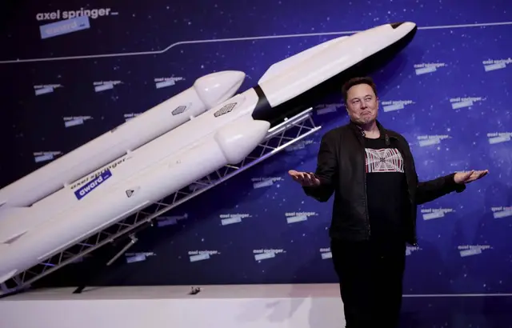

Elon Musk assure que SpaceX emmènera l’Homme sur Mars d’ici 10 ans

Le premier vol pour Mars aura lieu d’ici 10 ans. C’est la promesse faite par Elon Musk, le patron de SpaceX. Et encore, c’est une estimation haute. Pour aller sur la planète rouge, « au mieux, cela prendra 5 ans. Au pire, 10 ans », a indiqué le milliardaire durant le podcast de Lex Fridman
Elon Musk a vanté les qualités de sa fusée Starship qui doit permettre une telle aventure. « Starship est la fusée la plus complexe et la plus avancée qui ait jamais été fabriquée », a souligné le patron de SpaceX. Et d’ajouter : « C’est beaucoup. C’est vraiment un tout autre niveau. » Il faut admettre que le projet Starship a donné satisfaction après un atterrissage réussi en mai dernier. Une douzaine de vols doivent maintenant se dérouler en 2022.
Le plus gros problème pour rejoindre Mars n’est peut-être pas la solution technologique mais le coût d’une telle mission. « Il y a un certain coût par tonne jusqu’à la surface de Mars que nous pouvons atteindre pour établir une ville autosuffisante et au-delà, nous ne pouvons pas nous le permettre », a expliqué Elon Musk. Le chiffrage de cette aventure donne le tournis : « À l’heure actuelle, vous ne pourriez pas vous rendre sur Mars avec 1. 000 milliards de dollars. Aucune somme d’argent ne pourrait vous amener sur Mars. Nous devons faire en sorte que ce soit réellement possible ».
31/12/21 à 12h00